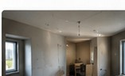
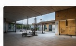
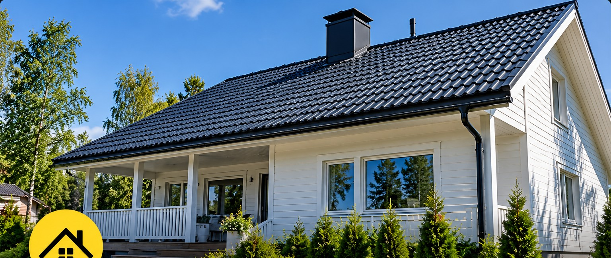
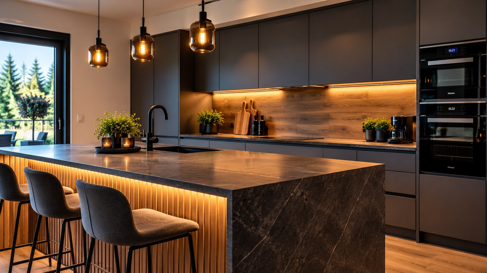

Sisäremontit
Huoneistojen ja omakotitalojen sisäremontit, pintojen uudistukset ja erilaiset korjaustyöt.
Lue lisää →JOPU Rakennus toteuttaa sisäremontit, tasoitus- ja maalaustyöt sekä ulko- ja kattomaalaukset ammattitaidolla Turussa ja lähialueilla.
Olipa kyseessä kodin pintaremontti tai rakennuksen ulkopintojen kunnostus, saat työt sovitusti ja huolellisesti toteutettuina.

Huoneistojen ja omakotitalojen sisäremontit, pintojen uudistukset ja erilaiset korjaustyöt.
Lue lisää →
Seinien ja kattojen tasoitukset, pohjatyöt ja maalaukset siistillä viimeistelyllä.
Lue lisää →
Rakennusten ulkopintojen ja kattojen pesut, huoltomaalaukset ja kunnostukset.
Lue lisää →Keräämme sivuille kuvia valmistuneista remonteista ja maalaustöistä. Ensimmäiset kohdekuvat lisätään pian.
Katso referenssisivu →
Kerro kohteestasi ja pyydä maksuton tarjous ilman sitoumusta.
Sisäremontteja, tasoitus- ja maalaustöitä, ulko- ja kattomaalauksia sekä muita rakennus- ja korjaustöitä.
Turussa ja lähialueilla. Muista kohteista voidaan sopia erikseen.
Kyllä, voit pyytää tarjouksen maksutta ja ilman sitoumusta.